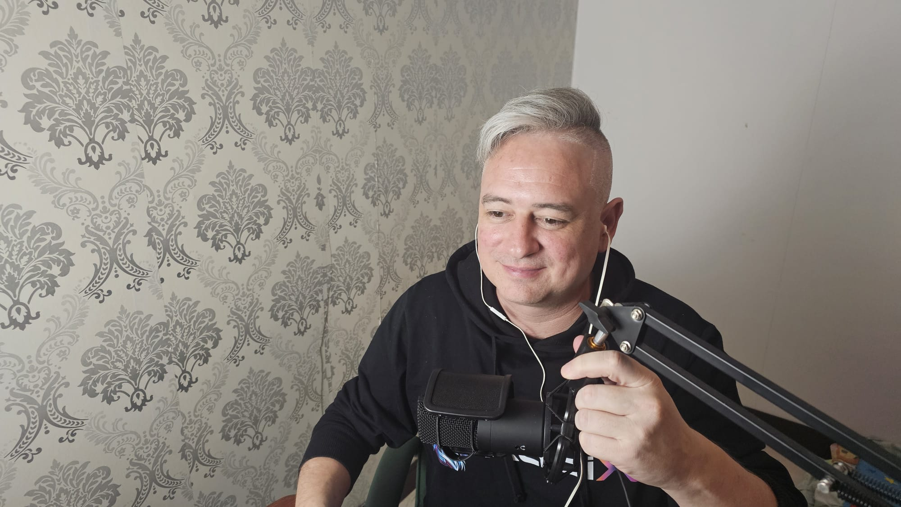
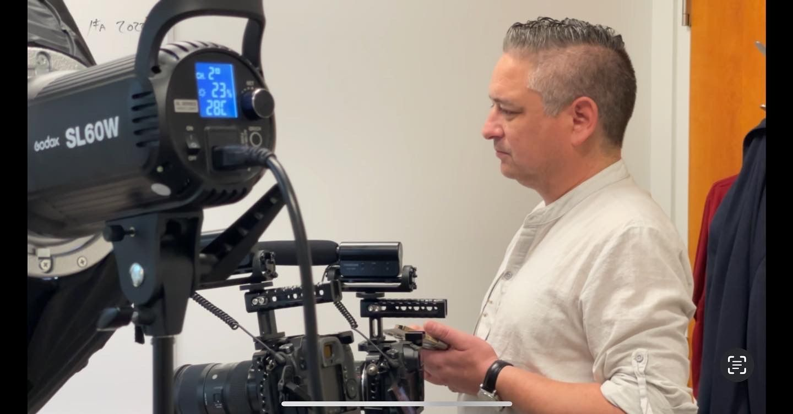

.jpg)
TOASTY MEDIA
Make the conversation matter.
One media company. A production studio built to create. A speaker and advisor built to communicate.
TWO WAYS TO WORK WITH TOASTY
Build the media.
Or bring the voice.
Your production room, from first idea to finished conversation.
Record a podcast. Run it live. Find the right guest. Build the production with AI. Studio is the client workspace where the work actually happens.

Podcast. Live. Directed.
Bring guests into the room, manage the production, record the conversation and run live sessions without turning your workflow into a pile of disconnected tools.
Client login →
Take the idea further.
Research, prepare, script, assemble, repurpose and package the media around the conversation. AI Production lives inside the same Studio and is enabled when your workspace needs it.
Open Studio →.jpg)
Find someone worth talking to.
Describe the guest, speaker or specialist you need. Toasty helps discover, qualify and prepare the right human for the conversation. Guest Finder is a Studio module, not another platform.
Find guests in Studio →.jpg)
Stage presence. Ideas with weight.
Speaking and stage presence, books, executive advisory and thought leadership for leaders working through AI, technology, communication and change.
Explore Ricardo.jpg)